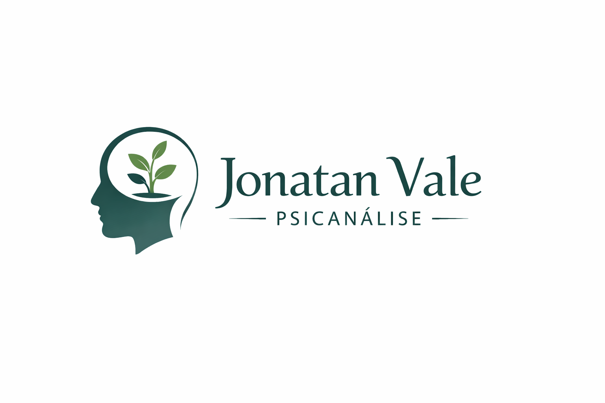

Sou Jonatan Vale, psicanalista com formação sólida e experiência no cuidado da saúde mental. Ao longo da minha trajetória compreendi que a escuta atenta e a compreensão da singularidade de cada pessoa são fundamentais para que o processo terapêutico seja transformador. Minha formação inclui estudos em psicanálise clássica e contemporânea, além de especializações em atendimento on‑line. Acredito na importância de uma relação terapêutica baseada na confiança, no respeito e na ética profissional.
Nesta clínica, busco criar um espaço seguro e acolhedor em que você possa refletir sobre sua história, reconhecer seus padrões de pensamento e comportamento e descobrir caminhos possíveis para uma vida mais plena. Trabalho com atendimentos remotos, permitindo que pessoas de qualquer lugar possam acessar o cuidado psicanalítico, e ofereço modalidades sociais para tornar o tratamento acessível.
Minha missão é criar um espaço terapêutico protegido onde você se sinta valorizado e pronto para olhar para dentro de si e fazer mudanças significativas na sua vida. A psicanálise é um convite para descobrir o que há por trás de pensamentos, afetos e comportamentos; por isso, o propósito desta clínica é possibilitar que cada pessoa se fortaleça emocionalmente e encontre novos significados para a sua história. A escuta empática, a reflexão conjunta e o respeito pelo ritmo individual são pilares do meu trabalho.
Ofereço também atendimentos sociais, porque acredito que o cuidado em saúde mental deve ser acessível a todos. Para cada pessoa que me procura, busco propor um plano terapêutico que respeite suas possibilidades e necessidades, valorizando a autonomia e a autodeterminação de cada um.
“O atendimento com o Jonatan me ajudou a compreender padrões que me faziam sofrer e a encontrar recursos para lidar com as dificuldades. Mesmo à distância, senti‑me acolhido e respeitado.”— Paciente anônimo
“A possibilidade de marcar sessões on‑line foi essencial para mim. Encontrei cuidado e escuta sem sair de casa, e pude ajustar os horários de acordo com minha rotina.”— Paciente anônimo
Atendimento remoto permite flexibilidade e conforto. Para marcar uma sessão ou saber mais sobre atendimentos sociais, preencha o formulário abaixo ou envie uma mensagem pelo e‑mail informado no rodapé.